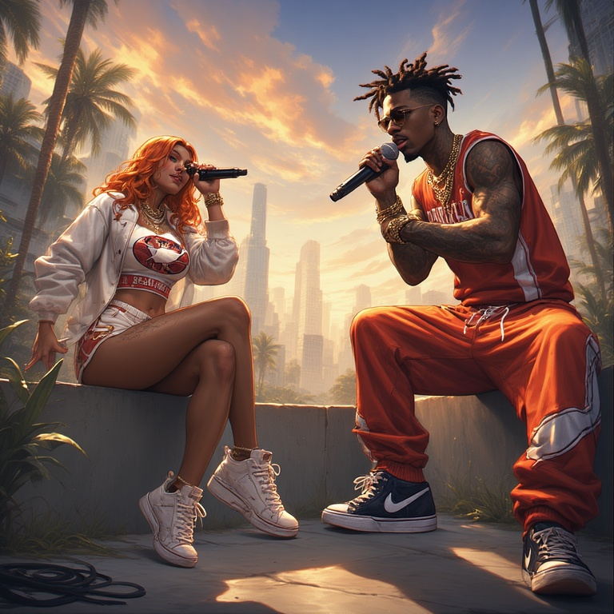

Lights come up, hearts start to race,
Weâve got fire running through this place.
Every heartbeat drums the same,
Chasing glory, shouting names!
(Pre-Chorus)
No fear, no fall,
Weâre breaking through it all.
(Chorus)
Rise up tonight â feel the thunder roll,
Hands to the sky, never letting go.
We run, we fight, we shine like the sun,
Energy high â weâre the chosen ones! â¡
(Verse 2)
Echoes bouncing off the stands,
Dreams built strong in calloused hands.
One voice, one team, one sound,
This is where our souls are found.
(Bridge)
Ohh, every scar tells a story,
Every loss builds the glory â
Weâll burn bright till the night is done,
Hearts united, beating as one!
(Final Chorus)
Rise up tonight â weâre alive, we run,
Chasing the stars till the morning comes.
No holding back, no giving in â
This is our time, let the fight begin! ð¥
(Chorus)
Ohhh, Iâm flying high on AWS,
Where my dreams deploy, no need to stress.
From Lambda lights to Dynamo nights,
Scaling up my world, everythingâs right!
(Verse 2)
CloudWatch eyes keeping logs in sight,
IAM rules keeping access tight.
VPC dreams, weâre subnet deep,
Auto-scaling armies never sleep!
(Bridge)
Got my CloudTrail runninâ, tracking the show,
Terraform builds wherever I go.
From Manchester skies to London rain,
The cloudâs my stage, Iâm on the mainframe!
(Final Chorus)
Ohhh, Iâm flying high on AWS,
Where uptime shines and Iâm truly blessed.
From Lambda love to Route 53,
The cloudâs my jam â itâs home to me! âï¸
[Verse 1 â Him]
Yeah, city lights flicker on the Thames at night,
Iâve been grindinâ for the dream, tryna get it right.
Bus stop talks, cold air, mid-December,
Stackinâ wins now, Iâll make âem remember.
[Verse 2 â Her]
You chat about grind but Iâve lived that fight,
North side queen with my aim in sight.
No silver spoon, just tea and grit,
I turn pain into art, thatâs my ultimate hit.
[Hook â Both]
We donât sleep, nah, we move till dawn,
From the flats to the stage, new kings reborn.
Bassline bumpinâ, hearts in sync,
One shot, no blink, yeah â weâre on the brink.
[Verse 3 â Him]
I came from the grey, made colour outta struggle,
Now I talk goals, no time for the subtle.
See her on the mic? Best mind your tone,
Sheâll flip the script, then claim the throne.
[Verse 4 â Her]
Donât gas me up, Iâm the spark and flame,
Words cut deep like a London rain.
Heâs the calm, Iâm the storm â thatâs the blend,
Two sides, one vibe, till the very end.
[Bridge â Both]
(He) Late nights, take flights, dream in motion,
(She) Big moves, real talk, pure devotion.
(He) No fear when the beat drops,
(She) We rise â no ceiling, no stops!
[Final Hook â Both]
We donât sleep, nah, we move till dawn,
From the flats to the stage, new kings reborn.
Bassline bumpinâ, hearts in sync,
One shot, no blink â what you think?
(Pre-Chorus)
No fear, no fall,
Weâre breaking through it all.
(Chorus)
Rise up tonight â feel the thunder roll,
Hands to the sky, never letting go.
We run, we fight, we shine like the sun,
Energy high â weâre the chosen ones! â¡
(Verse 2)
Echoes bouncing off the stands,
Dreams built strong in calloused hands.
One voice, one team, one sound,
This is where our souls are found.
(Bridge)
Ohh, every scar tells a story,
Every loss builds the glory â
Weâll burn bright till the night is done,
Hearts united, beating as one!
(Final Chorus)
Rise up tonight â weâre alive, we run,
Chasing the stars till the morning comes.
No holding back, no giving in â
This is our time, let the fight begin! ð¥

(Verse 1)
Yeah, they sell us dreams on the six oâclock news,
But behind those screens, they just bendinâ the truth.
Justice blindfolded, canât see whoâs who,
Rich man walks, poor man pays dues.
They tell us âtrust the system,â but the systemâs broke,
Paper laws burninâ while the people choke.
Courts in chaos, verdicts bought and sold,
We scream for fairness, but the world stays cold.
(Chorus)
Whereâs the truth when the liars run the show?
Whoâs the voice when the honest got no home?
Media preach, but their morals gone ghost,
We just want fairness, yeah, that matters most.
(Verse 2)
Mentors lost, idols sold their soul,
Trading truth for clicks, that control the scroll.
Politicians posing with their âhonourâ badge,
While the youth out here tryna dodge the trap.
The mirror cracked â reflection distorted,
Facts twisted up, justice contorted.
Societyâs blindfold slipping down slow,
We see the game now, we just want to know.
(Bridge)
Canât build peace on a lie thatâs disguised,
Canât fix trust when the truthâs been denied.
If we all stand up, no divide, no side,
Maybe then justice could finally rise.
(Outro)
So hereâs to the people, tired but aware,
Fighting for a system thatâs honest and fair.
We donât need kings, we donât need crowns,
Just truth that stands when the lies fall down.
âLoop Loopâ â Fun, Crazy Lyrics
Hook / Chorus (repeatable, catchy)
"Loop loop, spin around,
Jump up high, touch the clouds!
Loop loop, dance with me,
Crazy fun, wild and free!"
Verse 1
"I see a cat wearing a hat,
Riding a bike with a baseball bat!
Banana boats sail in the sky,
I wink at the moon as it waves goodbye!"
Pre-Chorus
"Zig zag, hop hop, tick-tock, pop!
Silly faces never stop,
Flip-flop, jump-jump, twirl-twirl, yay!
Every single dayâs a play!"
Chorus / Hook
"Loop loop, spin around,
Jump up high, touch the clouds!
Loop loop, dance with me,
Crazy fun, wild and free!"
Verse 2
"My shoes are dancing without me,
My hairâs a rainbow in a tree!
Chocolate rivers, candy rain,
I laugh so hard I go insane!"
Bridge / Breakdown
"Loop-de-loop, twist and twirl,
Jump on the moon, give it a whirl!
Loop-de-loop, spin and slide,
Hold my hand, enjoy the ride!"
Final Chorus / Hook
"Loop loop, spin around,
Jump up high, touch the clouds!
Loop loop, dance with me,
Crazy fun, wild and free!
Loop loop, spin around,
Jump up high, touch the clouds!
Loop loop, dance with me,
Crazy fun, wild and free!"
English Opera â Concept & Sample Lyrics
Title: âWhispers of the Heartâ
Act 1 â Soft, Tentative Opening (Recitative Style)
"I see you there⦠across the crowded hall,
A fleeting glance, a whisper in my soul.
Could this be love, or only a dream,
A spark that fades before it can be seen?"
Act 1 â Aria / Emotional Build
"Oh, heart, why do you leap so high,
When fear whispers, 'He does not care'?
Yet still, I dare to hope, to try,
To sing my longing in the open air."
Act 2 â Dramatic Conflict
"I hear his voice, yet is it mine to claim?
The world conspires with shadows, doubt, and blame.
But I will rise, my song a flame,
To pierce the night and call your name!"
Finale â Climactic, Soaring
"I reach for you! Though unknown your heart,
I sing this love, my soul laid bare!
And if my hope is all I own,
Then let my voice become a prayer!"
Rubber Ducky Disco"
(bouncy, bubbly, pure Saturday-morning madness)
[Verse 1]
I woke up in a bathtub wearing neon roller skates
My rubber ducky told me, âGirl, youâre runninâ late!â
The disco ball was spinning and the shampoo sang a riff
The loofah did a cartwheel, nearly fell right off the cliff
[Pre-Chorus]
So I jumped out with a towel cape,
Ready for my funky fate
Ducky grabbed the mic and said:
âHit it, queenâactivate!â
[Chorus]
⨠Quack-quack! Boom-boom!
Welcome to the Rubber Ducky Disco room
Where the bubbles pop and the floor goes zoom
And the bath toys dance like theyâve had perfume
⨠Flip-flap! Tick-tock!
Weird little beat thatâll never stop
Shake your feathers, spin that mop
Rubber Ducky Discoâquack until you drop!
[Verse 2]
The frog was DJâing with a glowstick in his hand
The sponge was doing breakdance on a tiny rubber band
The shower curtain shimmered like a superstar in space
And the toothbrush did the moonwalk with toothpaste on its face
[Pre-Chorus]
So I joined the chaos, hair a mess
Ducky said, âYouâre fabulous!â
Then the shampoo sprites appeared
And started chanting, âYAS!â
[Chorus]
⨠Quack-quack! Boom-boom!
Welcome to the Rubber Ducky Disco room
Where the bubbles pop and the floor goes zoom
And the bath toys dance like theyâve had perfume
⨠Flip-flap! Tick-tock!
Weird little beat thatâll never stop
Shake your feathers, spin that mop
Rubber Ducky Discoâquack until you drop!
[Bridge]
Gimme a wiggle, wiggle
Gimme a squeak, squeak
Rubber ducky rhythm
Going freaky every week
Jump left! Splash right!
Glow-in-the-dark shampoo fight!
If youâre not soaked, youâre not doing it rightâ
Letâs dive back in tonight!
[Final Chorus]
⨠Quack-quack! Boom-boom!
Welcome to the Rubber Ducky Disco room
Bubblegum beats and cartoon plume
Everybody wiggle like a bathroom broom
⨠Flip-flap! Tick-tock!
Duckyâs the star and the rest just flock
Silly little bop thatâll never stop
Rubber Ducky Discoâ
QUACK IT LIKE ITâS HOT!